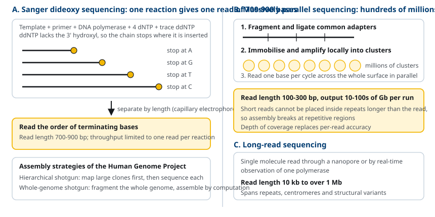
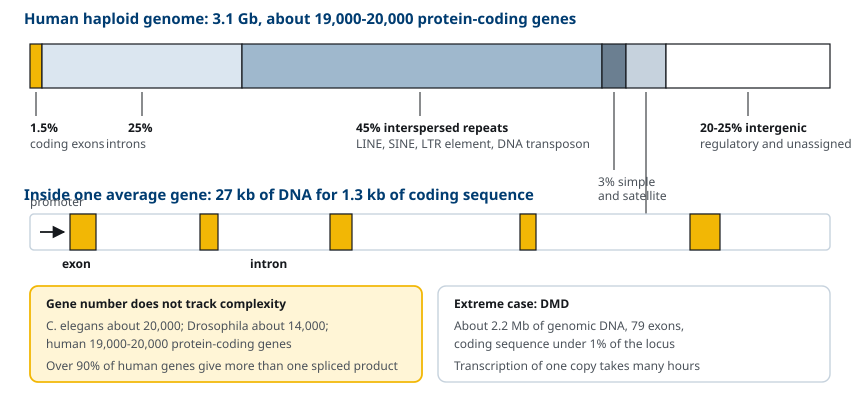
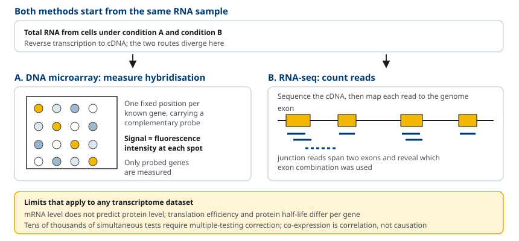
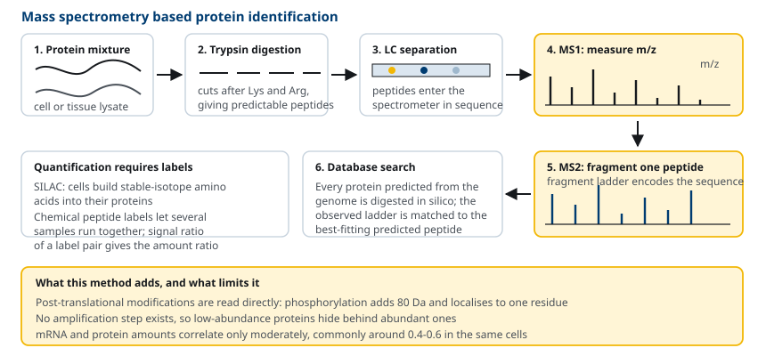
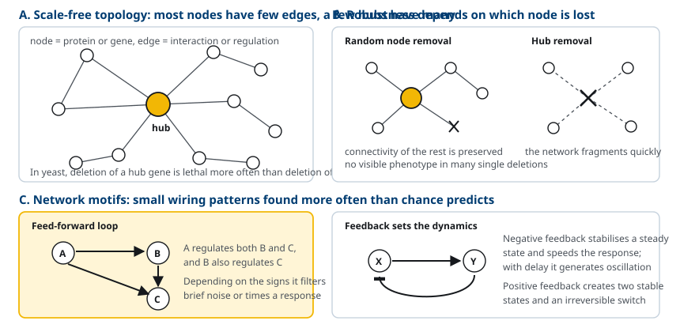

M01-W08-L02 · 인체일반생물학과 기초세포생물학
유전체·단백체와 시스템생물학
Genomes, Proteomics and Systems Biology
학습목표
- Sanger 서열 분석과 대규모 병렬 서열 분석의 원리 차이를 설명하고 각각이 적합한 실험 설계를 고른다.
- 사람 유전체의 구성을 단백질 암호화 부위, 반복 서열, 조절 영역으로 나누어 수치와 함께 설명한다.
- 비교유전체학이 기능을 추정하는 논리를 설명하고 보존된 비암호 서열의 의미를 해석한다.
- Microarray와 RNA-seq의 측정 원리를 비교하고 전사체 자료에서 결론을 끌어낼 때의 한계를 든다.
- 질량분석 기반 단백체 분석의 단계를 설명하고 전사체 자료와 단백체 자료가 어긋나는 이유를 든다.
- 단백질 상호작용 지도를 얻는 두 방법의 원리와 각각의 위양성·위음성 경향을 비교한다.
- 유전자 조절 네트워크를 node와 edge로 기술하고 scale-free 구조, hub, network motif의 의미를 설명한다.
선수지식
- M01-W06-L01 재조합 DNA와 분자생물학 실험 기법 — 염기서열 분석의 원리, coverage와 VAF, 발현 측정
- M01-W06-L02 유전자와 유전체의 구성 — 유전체의 구성 비율, 반복 서열, 참조 서열과 pangenome
- M01-W05-L03 유전정보의 흐름 — central dogma, mRNA 가공, codon
- M01-W05-L01 세포의 기원·진화와 세포 연구 방법 — prokaryote와 eukaryote 유전체의 규모 차이, 모델 생물
- M01-W05-L02 생체분자와 막의 구조 — nucleotide와 아미노산의 화학
강의 구성
- 1. 유전체 수준의 접근이 등장한 배경
- 2. DNA 서열 분석 기술의 발전
- 3. 사람 유전체의 구성
- 4. 비교유전체학과 서열 보존
- 5. 변이의 해석 — 서열에서 보고서까지
- 6. 집단 수준의 연관 — GWAS에서 다유전자 위험까지
- 7. 전사체 분석: microarray에서 RNA-seq까지
- 8. 단백체 분석: 질량분석과 정량
- 9. 단백질 상호작용 지도와 기능 유전체학
- 10. 시스템생물학과 네트워크 모델
- 11. 여러 층의 자료를 함께 읽기
- 12. 연결
1. 유전체 수준의 접근이 등장한 배경
20세기 세포생물학의 표준 전략은 한 번에 한 유전자, 한 단백질을 다루는 것이었다. 돌연변이체를 얻고, 책임 유전자를 찾고, 그 산물을 정제해 활성을 재어 경로에 배치했다. 이 전략으로 복제, 전사, 번역의 기본 기구가 밝혀졌다. 그러나 한 유전자씩 보는 접근으로는 답할 수 없는 질문이 남는다. 어떤 세포가 가진 유전자 전체는 몇 개인가, 그중 몇 개가 지금 켜져 있는가, 한 단백질이 몇 개의 상대와 결합하는가, 자극 하나에 반응해 발현이 바뀌는 유전자는 몇 개인가.
이 질문들은 전수 조사(comprehensive inventory)를 요구한다. 세포가 가진 유전자 전체를 유전체(genome), 그 유전체에서 만들어진 RNA 전체를 transcriptome, 단백질 전체를 proteome이라 부른다. 접미사 -ome은 "전체"를, -omics는 그 전체를 한꺼번에 측정하는 방법론을 가리킨다.
전수 조사가 가능해진 조건은 세 가지였다. 첫째, DNA 서열을 빠르고 싸게 읽는 기술이다. 둘째, 수억 개의 짧은 서열 조각을 원래 순서대로 맞추고 유전체에 대응시키는 계산 능력이다. 셋째, 단백질 혼합물을 분리하지 않고도 구성원을 동정하는 질량분석 기술이다.
전수 조사의 결과는 목록이다. 목록만으로는 기전이 나오지 않는다. 사람 유전체 서열이 완성된 뒤에도 "이 유전자가 무엇을 하는가"는 여전히 개별 실험으로 답해야 했다. 유전체 수준의 자료가 하는 일은 가설의 후보를 좁히는 것이다. 어떤 유전자가 특정 조건에서만 켜진다면 그 조건과 관련된 기능을 가질 가능성이 높고, 어떤 단백질이 알려진 복합체 구성원과 함께 정제된다면 그 복합체의 새 구성원일 가능성이 높다.
2. DNA 서열 분석 기술의 발전
Sanger의 dideoxy 서열 분석(1977) 주형 DNA, primer, DNA polymerase, 네 가지 dNTP에 소량의 dideoxynucleotide(ddNTP)를 섞는다. ddNTP는 3′ 위치에 hydroxyl기가 없어 다음 nucleotide와 phosphodiester 결합을 만들 수 없으므로, 삽입되는 순간 합성이 멈춘다. 결과는 서로 다른 지점에서 끝난 사슬의 혼합물이고, 길이 순으로 전기영동하면 각 위치의 염기를 읽을 수 있다. 네 종의 ddNTP에 서로 다른 형광색소를 붙이고 모세관 전기영동으로 분리하는 자동화가 1980년대 후반에 이루어졌다. 한 번에 읽는 길이(read length)는 700~900 염기이고 정확도가 높지만, 반응 하나가 서열 하나를 준다는 점이 처리량의 한계였다.

대규모 병렬 서열 분석(massively parallel sequencing, next-generation sequencing) 1990년대 말부터 개발된 방식들은 공통된 전략을 쓴다. 유전체를 짧은 조각으로 자르고, 양 끝에 공통 adapter를 붙이고, 각 조각을 평면이나 beads 위에 고정한 뒤 국소적으로 증폭해 같은 서열의 집합(cluster)을 만들고, 수억 개의 집합을 동시에 한 염기씩 읽는다. 널리 쓰이는 방식은 가역적 종결자를 쓰는 형광 기반 합성 서열 분석으로, read length는 100~300 염기에 머물지만 한 번의 실행에서 수백 Gb의 서열을 생산한다.
장쇄 서열 분석(long-read sequencing) 단일 DNA 분자를 nanopore를 통과시키며 전류 변화를 읽거나, 단일 polymerase의 nucleotide 삽입을 실시간으로 관찰하는 방식이다. Read length가 수십 kb에서 Mb에 이르므로 반복 서열 구간과 구조 변이를 건너뛰지 않고 읽을 수 있다. 사람 유전체에서 반복 서열 때문에 비어 있던 구간(centromere, 긴 분절 중복)이 2022년에 장쇄 서열로 메워져 말단에서 말단까지 이어진 서열이 보고되었다.
| 항목 | Sanger | 대규모 병렬 | 장쇄 |
|---|---|---|---|
| Read length | 700~900 bp | 100~300 bp | 10 kb~1 Mb 이상 |
| 한 실행의 산출량 | 수십 kb | 수십~수백 Gb | 수십~수백 Gb |
| 염기당 오류율 | 매우 낮음 | 낮음 | 방식에 따라 다르며 반복 읽기로 보정 |
| 적합한 용도 | 단일 유전자 확인, clone 검증 | 재서열 분석, 전사체, 변이 검출 | 신규 조립, 구조 변이, 반복 영역 |
Human Genome Project 1990년에 시작해 2001년에 초안, 2003년에 본서열이 발표되었다. 두 전략이 경쟁했다. 공공 컨소시엄은 유전체를 큰 clone으로 나누어 지도를 먼저 만들고 각 clone을 서열 분석하는 hierarchical shotgun 방식을, 민간 측은 유전체 전체를 무작위로 잘라 한꺼번에 읽고 계산으로 조립하는 whole-genome shotgun 방식을 썼다. 두 자료가 합쳐져 초안이 되었다.
서열 조립의 어려움은 반복 서열에서 온다. 같은 서열이 유전체 여러 곳에 있으면 짧은 read가 어느 위치에서 왔는지 결정할 수 없다. 이 문제가 read length가 길수록 완화되는 이유이고, 유전체 조립의 품질을 평가할 때 read length와 반복 서열 분포를 함께 보는 이유다.
3. 사람 유전체의 구성
사람 반수체 유전체는 약 3.1 Gb다. 가장 먼저 놀라움을 준 결과는 단백질 암호화 유전자의 수였다. 서열 완성 이전의 추정은 5만~10만 개였으나, 현재의 추정은 약 19,000~20,000개다. 선충(C. elegans)이 약 20,000개, 초파리가 약 14,000개를 가지므로 유전자 개수만으로는 사람의 복잡성이 설명되지 않는다.
더 중요한 수치는 유전체에서 각 요소가 차지하는 비율이다.
| 구성 요소 | 유전체 비율(대략) | 설명 |
|---|---|---|
| 단백질 암호화 exon | 약 1.5% | 실제로 아미노산 서열로 번역되는 부위 |
| Intron | 약 25% | 유전자 안에 있으나 번역되지 않는다 |
| Interspersed 반복 서열 | 약 45% | LINE, SINE, LTR retrotransposon, DNA transposon |
| 단순 반복·위성 DNA | 약 3% | microsatellite, centromere와 telomere의 반복 |
| 분절 중복(segmental duplication) | 약 5% | 1 kb 이상의 거의 동일한 중복 구간 |
| 나머지 유전자 간 영역 | 약 20~25% | 조절 서열과 기능이 확정되지 않은 부위 |
유전자 하나의 평균 길이는 약 27 kb이지만 암호화 서열은 평균 1.3 kb에 불과하다. 즉 사람 유전자는 대부분 intron이다. DMD 유전자는 약 2.2 Mb에 79개의 exon을 담고 있어 암호화 비율이 1% 미만이다.

사람의 복잡성이 유전자 개수에서 오지 않는다면 어디에서 오는가. 세 가지가 제시된다. 첫째, 대체 splicing이다. 사람 유전자의 90% 이상이 둘 이상의 splicing 산물을 만들어 단백질 종 수는 유전자 수를 크게 넘는다. 둘째, 번역 후 수식으로 한 단백질이 여러 상태를 갖는다. 셋째, 조절의 복잡성이다. 사람 유전체의 비암호 영역에는 수십만 개의 enhancer 후보가 있고, 같은 유전자가 조직과 시기에 따라 다른 조합의 조절 서열로 제어된다.
ENCODE 사업은 세포주별로 전사 시작점, 전사인자 결합 위치, chromatin 접근성, histone 수식을 측정해 유전체 전체의 기능 표지 지도를 만들었다. 이 자료에서 유전체의 상당 부분이 어떤 세포에서든 전사되거나 단백질에 결합한다는 결과가 나왔는데, 생화학적 활성이 있다는 사실과 선택압을 받는 기능이 있다는 주장은 구별해야 한다. 전사되는 모든 서열이 기능을 갖는다고 결론하지 않는다.
4. 비교유전체학과 서열 보존
어떤 서열이 중요한지 알려주는 가장 단순한 지표는 진화적 보존이다. 기능이 없는 서열의 변이는 선택에 걸리지 않으므로 중립적 속도로 쌓인다. 기능이 있는 서열의 변이는 제거되므로 종 사이에 더 비슷하게 남는다. 따라서 여러 종의 유전체를 정렬해 기대보다 변이가 적은 구간을 찾으면 기능 후보가 된다. 이것이 비교유전체학의 기본 논리다.
| 종 | 유전체 크기(대략) | 단백질 암호화 유전자 수(대략) | 사람과의 관계 |
|---|---|---|---|
| Escherichia coli | 4.6 Mb | 4,300 | 핵심 대사와 정보 기구의 보존 |
| Saccharomyces cerevisiae | 12 Mb | 6,000 | 세포주기, 분비 경로의 상동 유전자 |
| Caenorhabditis elegans | 100 Mb | 20,000 | 발생과 세포사멸 경로 |
| Drosophila melanogaster | 180 Mb | 14,000 | 체축 형성, 신호전달 |
| Mus musculus | 2.7 Gb | 22,000 | 암호화 유전자의 대부분이 1:1 대응 |
| Homo sapiens | 3.1 Gb | 19,000~20,000 | — |
표에서 유전체 크기와 유전자 수가 비례하지 않는다는 점을 읽어야 한다. 이 불일치를 C-value paradox라 불렀고, 해답은 비암호 영역과 반복 서열의 양이 계통에 따라 크게 다르다는 데 있었다.
보존 분석의 결과 중 중요한 것은 보존된 비암호 서열(conserved non-coding sequence)이다. 사람과 생쥐 유전체를 정렬하면 강하게 보존된 구간의 상당수가 단백질을 암호화하지 않는다. 이 구간들은 발생 조절 유전자 근처에 몰려 있고, 실험적으로 enhancer 활성을 보이는 경우가 많다. 즉 보존은 암호화 여부와 무관하게 기능의 지표가 된다.
사람과 chimpanzee의 암호화 서열은 약 99% 동일하다. 차이가 작다는 사실은 표현형 차이가 단백질 서열보다 발현 양상의 차이에서 올 가능성을 시사한다. 이 추론은 비교 전사체 분석과 enhancer 비교로 검증되고 있다.
사람 집단 내부의 변이도 비교의 대상이다. 두 사람의 유전체는 약 0.1% 다르고, 대부분은 단일 염기 다형성(single nucleotide polymorphism, SNP)이다. 전장유전체 연관분석(genome-wide association study, GWAS)은 질병군과 대조군에서 SNP 빈도를 비교해 연관 구간을 찾는다. 다만 GWAS가 지목하는 변이의 90% 이상은 비암호 영역에 있어, 어느 유전자의 발현을 어떻게 바꾸는지를 따로 밝혀야 한다.
5. 변이의 해석 — 서열에서 보고서까지
서열을 읽는 일은 이제 병목이 아니다. 한 사람의 exome에서 약 2만 개, genome에서 약 400만 개의 변이가 참조 서열과 다르게 나오며, 그 가운데 질환의 원인인 것은 많아야 하나둘이다. 병목은 읽기가 아니라 가려내기에 있다. 이 절은 그 가려내기의 논리를 다룬다. 측정 기술 자체는 M01-W06-L01에 있다.
변이를 걸러내는 순서는 정해져 있다.
1. 집단 빈도로 거른다. 중증 질환의 원인 변이는 집단에서 드물다. gnomAD 같은 대규모 집단 자료에서 대립형질 빈도가 질환의 유병률보다 높으면 그 변이는 단독 원인이 아니다. 이 단계에서 변이의 90% 이상이 제외된다. 2. 산물에 미치는 영향으로 거른다. 종결 codon 생성, frameshift, 정규 splice site 변이처럼 기능 상실이 예상되는 변이를 우선 본다. 다만 마지막 exon의 종결 변이는 NMD를 피하므로 결과가 다르고(M01-W07-L01), 읽기틀이 유지되는 결실은 경증이 될 수 있다(M01-W07-L03). 3. 유전 양식과 표현형으로 거른다. 가족 구성원을 함께 읽어 de novo 변이인지, 열성 질환에서 두 대립형질이 각각 부모에게서 온 것인지(trans 배치)를 확인한다. 같은 염색체에 함께 있으면(cis) 다른 한쪽은 정상이므로 원인이 아니다. 4. 기능 증거를 모은다. 같은 변이가 다른 환자에서 보고되었는지, 기능 실험이 있는지, 보존 정도와 구조 예측이 어떤지를 모은다.
이 증거를 정해진 규칙으로 합산해 변이를 다섯 등급으로 분류하는 체계가 ACMG/AMP 지침이다.
| 등급 | 뜻 | 임상에서의 취급 |
|---|---|---|
| Pathogenic | 병원성 | 진단 근거로 쓴다. 가족 검사와 관리로 이어진다 |
| Likely pathogenic | 병원성 유력 | 임상적으로는 대개 병원성과 같이 다룬다 |
| Variant of uncertain significance(VUS) | 의미 불명 | 진단에 쓰지 않는다. 가족 검사의 근거가 되지 않는다 |
| Likely benign | 양성 유력 | 보고하지 않거나 참고로만 적는다 |
| Benign | 양성 | 보고하지 않는다 |
증거의 공백을 메우려는 체계적 접근이 다중 변이 기능 검정(multiplexed assay of variant effect, MAVE)이다. 한 유전자에서 가능한 모든 단일 아미노산 치환을 미리 만들어 세포에 넣고, 기능을 요구하는 선택압을 준 뒤 각 변이의 빈도 변화를 서열 분석으로 세어 변이별 기능 점수의 지도를 얻는다. BRCA1, PTEN, TP53, MSH2 등에서 보고되었고, 환자에게서 그 변이가 발견되기 전에 미리 증거를 만들어 둔다는 점에서 기존의 사후적 기능 실험과 성격이 다르다. 임상 분류 지침에 기능 증거로 받아들여지기 시작했다.
6. 집단 수준의 연관 — GWAS에서 다유전자 위험까지
앞 절의 변이는 하나로 질환을 만드는 드문 변이였다. 흔한 질환의 대부분은 그렇지 않다. 당뇨병, 관상동맥질환, 정신질환은 수천 개의 흔한 변이가 각각 작은 효과를 더해 위험을 만든다. 이 구조를 다루는 방법이 전장유전체 연관분석(GWAS)이다.
논리는 단순하다. 환자군과 대조군에서 수백만 개 SNP의 빈도를 비교해 차이가 통계적으로 유의한 자리를 찾는다. 검정 수가 많으므로 유의 수준을 5×10⁻⁸ 수준으로 엄격하게 잡는다. 그러나 결과를 읽는 데는 세 가지 제약이 따라붙는다.
- 지목된 SNP이 원인 변이가 아니다. 가까이 있는 변이들은 함께 전달되므로(연관 불평형, linkage disequilibrium) 한 구간 안의 수십~수백 개 변이가 비슷한 연관을 보인다. 어느 것이 실제 원인인지 좁히는 작업을 미세지도화(fine-mapping)라 한다.
- 지목된 변이의 90% 이상이 비coding 영역에 있다. 그래서 그 변이가 어느 세포에서 어느 유전자의 발현을 바꾸는지를 따로 밝혀야 한다. 발현량과 연관된 변이를 eQTL이라 하고, 질환 연관 신호와 eQTL 신호가 같은 원인 변이에서 오는지를 통계적으로 검정하는 것이 colocalization이다.
- 가장 가까운 유전자가 표적이 아닐 수 있다. Enhancer는 TAD 안에서 수십~수백 kb를 건너 작용하므로(M01-W06-L02), 거리만으로 표적을 정하면 틀린다. 비만과 연관된 FTO 구간의 변이가 실제로는 멀리 있는 IRX3·*IRX5*의 발현을 바꾼다는 결과가 이 교훈의 표준 사례다.
GWAS 결과를 한 사람의 수치로 합산한 것이 다유전자 위험 점수(polygenic risk score, PRS)다. 각 변이의 효과 크기에 그 사람이 가진 대립형질 수를 곱해 더한다. PRS의 쓰임과 한계가 모두 분명하다. 집단을 상위 몇 퍼센트로 나누면 위험 차이가 뚜렷하게 보이지만, 개인 수준의 예측력은 낮다. 더 중요한 제약은 조상 집단 사이의 이식성이다. 유럽계 자료로 만든 점수를 다른 조상 집단에 적용하면 성능이 크게 떨어진다. 연관 불평형 구조와 대립형질 빈도가 집단마다 다르기 때문이며, 이는 해당 집단의 자료를 모아야만 해결된다. 임상 도입을 논의할 때 이 격차 자체가 형평성의 문제로 지적된다.
7. 전사체 분석: microarray에서 RNA-seq까지
유전체는 세포마다 같지만 발현은 세포마다 다르다. 어떤 유전자가 어떤 조건에서 얼마나 전사되는지를 전수 측정하는 것이 전사체 분석이다.
DNA microarray 유리 기판 위의 정해진 위치에 각 유전자에 상보적인 oligonucleotide를 고정한다. 세포에서 추출한 RNA를 형광 표지된 cDNA로 바꾸어 기판에 얹으면 상보적인 위치에 결합하고, 각 지점의 형광 강도가 그 유전자의 상대적 양을 준다. 두 조건의 시료를 다른 색으로 표지해 함께 얹으면 조건 사이의 비를 바로 읽을 수 있다. 한계는 분명하다. 기판에 올려 둔 서열만 측정되므로 미리 알고 있는 유전자만 볼 수 있고, 교차 결합 때문에 비슷한 서열을 구별하기 어렵고, 신호가 포화되어 측정 범위가 좁다.
RNA-seq RNA를 cDNA로 역전사한 뒤 대규모 병렬 서열 분석으로 읽고, read를 유전체나 transcriptome에 대응시켜 개수를 센다. 측정값이 결합 강도가 아니라 read 수이므로 측정 범위가 넓고, 미리 정의된 탐침이 없으므로 새 transcript, splicing 변이, 융합 transcript, 염기 수준의 변이까지 같은 자료에서 볼 수 있다. 현재 전사체 분석의 표준이다.
| 항목 | Microarray | RNA-seq |
|---|---|---|
| 측정 원리 | hybridization 형광 강도 | read 개수 계수 |
| 미리 알아야 하는 정보 | 탐침 서열 필요 | 불필요(참조 유전체는 대응에 사용) |
| 새 transcript 검출 | 불가 | 가능 |
| 대체 splicing 분석 | 제한적 | exon·junction 수준으로 가능 |
| 측정 범위 | 좁음(신호 포화) | 넓음 |
단일세포 RNA-seq(single-cell RNA-seq) 조직을 갈아 측정하면 세포 종류별 발현이 평균값에 묻힌다. 세포를 하나씩 미세 물방울에 가두고 세포별 바코드를 붙여 함께 서열 분석하면, 세포 하나하나의 발현 양상을 얻어 조직 안의 세포 유형을 사후적으로 분류할 수 있다. 세포당 검출되는 유전자 수는 전체 발현 유전자보다 적고 발현량이 낮은 transcript가 누락되므로, 개별 세포의 정량보다 세포 집단의 구분과 비교에 쓰인다.
전사체 자료를 해석할 때 지켜야 할 제약이 있다. 첫째, mRNA 양은 단백질 양과 비례하지 않는다. 번역 효율과 단백질 반감기가 유전자마다 다르다. 둘째, 수만 개 유전자를 동시에 검정하면 우연한 유의 결과가 다수 나오므로 다중 검정 보정이 필요하다. 셋째, 발현이 함께 변한다는 것은 상관이고 인과가 아니다.
전사체를 조직 안의 위치와 함께 읽는 방법도 자리를 잡았다. 공간 전사체(spatial transcriptomics)는 조직 절편 위에 위치를 아는 바코드를 깔아 두고 그 자리의 RNA를 포획하거나, 형광 탐침으로 조직 안에서 전사체를 직접 세어, 어느 세포가 어디에 있고 무엇을 발현하는가를 함께 준다. 조직을 갈아 측정할 때 사라지는 정보, 즉 종양과 면역세포의 접촉면이나 조직의 층 구조에 따른 발현 차이를 볼 수 있다. 단일세포 자료와 공간 자료를 합쳐 세포 유형의 지도를 조직 좌표에 올리는 작업이 여러 장기에서 진행되고 있다.
자료 처리에서 반드시 다루어야 하는 두 가지 인공 요소도 함께 알아 둔다. 첫째, 보정(normalization)이다. 시료마다 전체 read 수가 다르므로 그대로 비교할 수 없고, 한 유전자가 전체의 큰 비율을 차지하면 나머지의 상대값이 끌려 내려간다. 둘째, 일괄 효과(batch effect)다. 서로 다른 날, 다른 시약, 다른 장비로 측정한 시료 사이에는 생물학적 차이보다 큰 기술적 차이가 생기므로, 조건을 batch에 몰아넣지 않고 섞어 배치하는 설계가 필수적이다. 자료만 보고 보정하는 방법은 생물학적 차이를 함께 지울 위험이 있으므로 설계 단계의 배치가 우선이다.

8. 단백체 분석: 질량분석과 정량
단백체 분석의 중심 도구는 질량분석(mass spectrometry)이다. 이온화한 분자를 전기장·자기장에서 움직여 질량 대 전하비(m/z)를 재는 장치다. 단백질 혼합물을 다루는 표준 절차는 다음과 같다.
1. 단백질 혼합물을 trypsin으로 자른다. Trypsin은 lysine과 arginine의 carboxyl 쪽을 특이적으로 끊어 예측 가능한 peptide 집합을 만든다. 2. Peptide 혼합물을 액체 크로마토그래피로 분리해 질량분석기로 순차 주입한다. 3. 1차 질량분석으로 각 peptide의 m/z를 재고, 선택한 peptide를 충돌로 조각낸 뒤 2차 질량분석으로 조각들의 m/z를 잰다(tandem MS, MS/MS). 4. 조각 질량 양상을 유전체에서 예측한 peptide 목록과 맞추어 어느 단백질에서 온 peptide인지 동정한다.
이 절차가 성립하는 전제는 유전체 서열이 먼저 있다는 것이다. 유전체에서 예측한 모든 단백질을 trypsin으로 자른 가상 peptide 목록이 검색 대상이 되므로, 유전체 사업이 단백체 분석의 선행 조건이었다.
정량에는 표지를 쓴다. 안정 동위원소로 표지한 아미노산을 배지에 넣어 세포가 단백질에 넣게 하거나(SILAC), 소화 후 peptide에 화학 표지를 붙여 여러 시료를 한 번에 분석한다. 같은 peptide의 표지 쌍이 질량 차이로 구별되므로 신호 비가 양의 비를 준다.
질량분석은 번역 후 수식을 직접 본다는 점에서 전사체 분석이 줄 수 없는 정보를 준다. Phosphorylation은 peptide 질량을 80 Da 늘리므로 어느 잔기가 인산화되었는지를 서열 수준에서 지정할 수 있다. 신호전달 연구에서 자극 전후의 phosphoproteome을 비교하는 실험이 표준이 된 이유다.

전사체와 단백체는 자주 어긋난다. 같은 세포에서 mRNA 양과 단백질 양의 상관계수는 흔히 0.4~0.6 범위로 보고된다. 원인은 번역 조절, 단백질 분해 속도의 차이, 측정 편향이다. 즉 두 자료는 서로를 대체하지 않는다.
단백체 분석에는 전사체 분석에 없는 기술적 한계가 있다. 증폭 수단이 없으므로 양이 적은 단백질은 많은 단백질에 가려진다. 혈장에서는 albumin이 단백질 질량의 절반 이상을 차지해, 농도가 낮은 표지자를 보려면 분획이나 고갈 처리가 필요하다. 혈장 단백질의 농도 범위는 10자리 수에 걸쳐 있으므로, 질량분석만으로 저농도 단백질을 재는 것은 지금도 어렵다.
측정 방식도 둘로 갈린다. 지금까지 설명한 방식은 각 주기마다 신호가 센 peptide를 골라 조각내는 data-dependent acquisition이다. 고르는 과정이 들어가므로 같은 시료를 다시 측정했을 때 동정되는 peptide가 달라지는 문제가 있다. 이를 피하려고 m/z 구간을 정해 그 안의 모든 이온을 함께 조각내고 계산으로 분해하는 data-independent acquisition(DIA)이 쓰이며, 재현성과 정량의 완성도가 높아 대규모 임상 시료 분석의 표준이 되고 있다.
질량분석을 쓰지 않는 단백체 측정도 임상 쪽에서 빠르게 늘었다. 항체나 압타머를 쓰는 친화 기반 단백체(affinity proteomics)는 수천 종의 단백질을 소량의 혈장에서 동시에 정량한다. 감도와 처리량이 높은 대신 측정하려는 단백질을 미리 정해야 하고, 결합체의 특이성이 곧 측정의 신뢰도가 된다. 대규모 코호트에서 수천 종 혈장 단백질과 질환 발생을 연결하는 연구가 이 기술로 수행되며, 진단 표지자와 약물 표적의 발굴에 쓰인다.
단백체가 전사체 자료를 보완하는 지점을 정리해 둔다. 첫째, 번역 후 수식은 전사체 자료에 전혀 나타나지 않는다. 둘째, 단백질의 반감기와 회전율을 동위원소 표지로 직접 재면 왜 두 자료가 어긋나는지를 설명할 수 있다. 셋째, 복합체의 구성원은 단백질 수준에서만 측정된다. 전사량이 같은데 복합체가 조립되지 않는 상태는 전사체 분석으로는 보이지 않는다.
9. 단백질 상호작용 지도와 기능 유전체학
단백질은 대개 복합체로 일한다. 어느 단백질이 어느 단백질과 결합하는지를 전수 조사한 결과를 interactome이라 한다. 두 가지 방법이 대규모로 쓰였다.
Yeast two-hybrid 전사인자를 DNA 결합 도메인과 활성화 도메인으로 나누어, 각각을 조사할 두 단백질에 융합한다. 두 단백질이 결합하면 두 도메인이 한 promoter 위에서 가까워져 reporter 유전자가 발현된다. 효모에서 두 유전자를 조합해 대량으로 시험할 수 있고, 약한 상호작용과 일시적 상호작용도 잡아낸다. 다만 융합 단백질이 핵 안에서 비정상적 농도로 만나므로 생리적으로 만나지 않는 쌍이 양성으로 나오는 위양성이 생기고, 막단백질처럼 핵으로 가지 못하는 단백질은 측정되지 않는다.
친화 정제 질량분석(affinity purification–mass spectrometry) 관심 단백질에 tag를 붙여 세포에서 발현시키고, tag로 잡아당긴 뒤 함께 붙어 나온 단백질을 질량분석으로 동정한다. 세포 안에서 실제로 형성된 복합체를 그대로 본다는 장점이 있고, 복합체 구성원 전체를 한 번에 준다. 한계는 약하거나 짧게 유지되는 상호작용이 세척 과정에서 떨어진다는 점과, 직접 결합과 같은 복합체 안의 간접 연결을 구별하지 못한다는 점이다.
| 항목 | Yeast two-hybrid | 친화 정제 질량분석 |
|---|---|---|
| 측정 대상 | 두 단백질의 쌍 | 하나의 미끼에 붙은 복합체 전체 |
| 직접 결합 여부 | 직접 결합을 보는 경향 | 간접 연결 포함 |
| 약한 상호작용 | 검출 가능 | 세척에서 소실되기 쉽다 |
| 주된 오류 | 위양성(비생리적 만남) | 위음성(약한 결합 소실), 비특이 결합 |
| 세포 환경 | 효모 핵 안 | 원래 세포의 조건 |
두 방법의 오류 경향이 반대이므로, 양쪽에서 함께 나온 상호작용은 신뢰도가 높다. 대규모 상호작용 자료를 쓸 때는 어느 방법으로 얻었는지와 몇 번 독립적으로 관찰되었는지를 함께 본다.
기능을 묻는 전수 조사도 가능하다. 유전자를 하나씩 없애고 표현형을 보는 대규모 교란 실험이다. 효모에서는 약 6,000개 유전자의 결손 균주 집합이 만들어졌고, 동물 세포에서는 RNA 간섭에 이어 CRISPR–Cas9 기반 선별(screen)이 쓰인다. 유전체 전체를 겨냥하는 guide RNA 라이브러리를 세포 집단에 도입하고, 선택압을 준 뒤 살아남은 세포에서 guide RNA 서열을 세면 어느 유전자가 그 조건에서 필요한지가 나온다. 이 설계는 약물 내성 유전자, 필수 유전자, 특정 경로의 구성원을 체계적으로 찾는 데 쓰인다.
교란 실험의 해상도도 올라갔다. dCas9에 억제·활성화 도메인을 붙인 CRISPRi·CRISPRa는 유전자를 없애지 않고 발현만 내리거나 올리므로, 필수 유전자의 부분적 억제 효과를 볼 수 있고 비coding 조절 서열도 표적으로 삼을 수 있다. 교란과 측정을 결합한 Perturb-seq은 세포마다 어느 guide RNA가 들어갔는지를 바코드로 읽으면서 그 세포의 전사체를 함께 읽어, 하나의 실험에서 수백~수천 가지 교란의 전사체 반응을 얻는다. 여러 유전자를 동시에 끄는 조합 교란으로 유전자 사이의 관계(상가성, 완충, 합성 치사)를 직접 측정할 수도 있다. 수백 개 암세포주에서 유전체 전체 교란 자료를 모은 DepMap 같은 공개 자료는 "어느 유전형의 종양이 어느 유전자에 의존하는가"를 체계적으로 검색할 수 있게 해 표적 발굴의 출발점이 되었다.
10. 시스템생물학과 네트워크 모델
구성원 목록과 상호작용 목록이 모이면 네트워크로 기술할 수 있다. 단백질이나 유전자를 node로, 상호작용이나 조절 관계를 edge로 둔다. 시스템생물학은 이렇게 기술한 네트워크의 성질에서 개별 구성원을 보아서는 나오지 않는 결론을 끌어내려는 접근이다.
관찰된 네트워크의 성질 중 세 가지가 반복적으로 보고되었다.
- 연결 수의 불균등 분포 대부분의 node는 적은 수의 edge를 갖고 소수의 node가 매우 많은 edge를 갖는다. 이런 분포를 보이는 그래프를 scale-free network라 하고, 많이 연결된 node를 hub라 한다. 효모에서 hub 유전자는 결손 시 치명적인 비율이 높다.
- 견고성(robustness) 무작위로 node를 제거해도 네트워크의 연결성은 잘 유지되지만, hub를 겨냥해 제거하면 빠르게 붕괴한다. 유전자 하나를 없애도 표현형이 나타나지 않는 경우가 흔한 이유를 이 구조로 설명한다.
- Network motif 전체 네트워크 안에 무작위 기대보다 자주 나타나는 작은 연결 양상이 있다. 대표적인 것이 feed-forward loop로, A가 B와 C를 모두 조절하고 B도 C를 조절하는 세 node 구조다. 부호의 조합에 따라 잡음을 걸러내거나 자극의 지속 시간을 재는 기능을 한다.

네트워크 구조의 의미는 동역학으로 넘어갈 때 분명해진다. 음성 feedback은 정상 상태를 안정화하고 반응을 빠르게 하며, 지연이 있는 음성 feedback은 진동을 만든다. 양성 feedback은 두 개의 안정 상태를 만들어 가역적 자극에 비가역적으로 반응하게 한다. 세포주기의 비가역적 전이와 세포 운명 결정에서 이 구조가 반복해 나타난다.
시스템생물학의 방법론은 측정–모형–예측–재측정의 순환이다. 전사체와 단백체 자료로 네트워크를 세우고, 미분방정식이나 논리 모형으로 동역학을 기술하고, 모형이 예측하는 교란 결과를 실험으로 확인해 모형을 고친다. 모형이 유용한지를 판정하는 기준은 자료를 잘 재현하는지가 아니라 측정하지 않은 조건의 결과를 맞히는지다.
한계도 분명하다. 대규모 자료는 측정 방법에 따른 편향을 담고 있고, 상호작용 목록은 세포 종류와 조건을 구별하지 않고 합친 것이며, 매개변수를 모르는 모형은 자유도가 커 어떤 결과든 맞출 수 있다. 네트워크 그림에서 바로 기전을 읽지 않고, 지목된 후보를 개별 실험으로 검증하는 단계가 남는다.
11. 여러 층의 자료를 함께 읽기
유전체, 전사체, 단백체, 대사체, 후성유전체는 같은 세포의 서로 다른 층이다. 한 층만 보면 놓치는 것이 생기므로 여러 층을 함께 읽는 다중 오믹스(multi-omics) 접근이 표준이 되어 가고 있다. 다만 "함께 읽는다"는 말이 무엇을 뜻하는지를 분명히 해야 한다. 세 가지 서로 다른 작업이 섞여 쓰인다.
- 수직적 통합: 같은 시료에서 여러 층을 측정해 한 층의 변화가 다른 층에서 어떻게 나타나는지를 본다. 유전체 변이 → 발현 변화 → 단백질 변화의 사슬을 추적하는 것이 전형이다. 종양에서 유전체·전사체·단백체를 같은 시료에서 측정한 자료는, 변이가 있어도 단백질 수준에서는 보상되는 경우가 드물지 않음을 보여 주었다.
- 층 사이의 인과 방향 설정: 상관만으로는 어느 층이 먼저인지 알 수 없다. 앞 절의 멘델 무작위화나 시간 경과 측정, 교란 실험이 방향을 정하는 수단이다.
- 환자 분류: 여러 층의 자료를 합쳐 임상적으로 다른 군을 나눈다. 유방암을 유전체·전사체 양상으로 나눈 분자 아형이 치료 선택과 예후에 쓰이는 것이 확립된 예다.
통합에는 고유한 통계적 어려움이 있다. 각 층의 측정 단위와 잡음 구조가 다르고, 변수의 수가 시료의 수보다 압도적으로 많다. 변수 수가 시료 수를 크게 넘는 조건에서는 아무 신호도 없는 자료에서도 군이 나뉘고 예측 모형이 만들어진다. 그래서 이 분야에서는 모형이 자료를 잘 설명하는지가 아니라 독립된 다른 코호트에서 재현되는지가 유일한 판정 기준이 된다. 과거에 발표된 종양 발현 기반 예후 분류 가운데 상당수가 외부 검증에서 재현되지 않았던 것이 이 교훈의 배경이다.
자료를 쓰는 조건도 생물학의 일부가 되었다. 대규모 자료는 공개 저장소에 올려 다시 분석할 수 있게 하는 것이 관행이 되었고, 그에 따라 식별 가능성과 동의가 쟁점이 되었다. 유전체 서열은 본질적으로 개인을 식별하며 가족 구성원의 정보까지 담는다. 그래서 자료는 통제된 접근 체계로 공개되고, 재식별 위험을 줄이기 위해 요약 통계만 공개하거나 분석을 자료가 있는 곳에서 수행하는 방식이 쓰인다. 임상 유전체 검사의 동의서가 자료의 이차 사용 범위를 따로 묻는 이유가 여기에 있다.
12. 연결
이 수업은 전수 측정의 방법과 그 자료를 읽는 규율을 다루었다. 측정의 기술적 상세와 각 자료가 쓰이는 맥락은 앞뒤의 수업에 나누어 있다.
- M01-W06-L01 재조합 DNA와 분자생물학 실험 기법 — 염기서열 분석, coverage와 VAF, ChIP-seq과 ATAC-seq의 원리, 실험 설계의 원칙을 다룬다.
- M01-W06-L02 유전자와 유전체의 구성 — 유전체의 구성 비율, 반복 서열, 참조 서열과 pangenome, 복제수 변이의 구조를 다룬다.
- M01-W07-L01 RNA 합성과 가공 — splice site 변이의 결과와 NMD를 다룬다. 변이 해석에서 이 지식이 직접 쓰인다.
- M01-W07-L03 단백질 합성 — 읽기틀 규칙, 개시 codon과 uORF 변이, ribosome profiling이 밝힌 비정규 ORF를 다룬다.
- M01-W08-L01 번역 후 가공·접힘·분해 — 전사체 양과 단백질 양이 어긋나는 기전, 수식의 종류, 접힘 결함 질환을 다룬다.
- M01-W11-L03 신호 경로의 통합 — 네트워크 motif와 되먹임 구조가 실제 신호 경로에서 어떻게 작동하는지를 다룬다.
- M01-W12-L03 암의 세포생물학 — 종양 유전체 분석, mutational signature, 의존성 지도가 표적 발굴로 번역되는 과정을 다룬다.
- M02-W01-L01 분자진단의 원리 — 검사의 민감도·특이도, 보고 기준, 이차 소견의 처리를 임상 검사의 틀에서 정리한다.
- M02-W01-L02 유전 질환의 분자 기전 — 변이 유형별 기전과 유전 양식, 유전상담의 논리를 다룬다.
확인 문항
어떤 연구자가 이전에 보고되지 않은 세균의 유전체를 처음 조립하려 한다. 짧은 read를 주는 대규모 병렬 서열 분석만 쓰는 설계의 문제와 보완 방법을 설명하라.
해설
짧은 read는 반복 서열 구간에서 위치를 결정할 수 없다는 문제가 있다. 같은 서열이 유전체 여러 곳에 있을 때 read의 길이가 반복 단위보다 짧으면 어느 반복에서 온 것인지 구별할 수 없어 조립이 그 지점에서 끊기고, 반복 사이의 배열 순서와 copy 수가 확정되지 않는다. 보완 방법은 read length가 반복 단위를 넘어서는 장쇄 서열 분석을 함께 쓰는 것이다. 장쇄 read로 반복 구간을 가로질러 골격을 만들고 정확도가 높은 짧은 read로 염기 수준의 오류를 보정하는 혼합 전략이 표준으로 쓰인다.
사람의 단백질 암호화 유전자 수가 선충과 비슷한 약 20,000개라는 결과가 발표되었을 때 "사람의 복잡성을 설명할 수 없다"는 반응이 나왔다. 이 반응이 전제한 가정이 무엇이고 어떤 점에서 틀렸는지 설명하라.
해설
전제는 표현형의 복잡성이 유전자 개수에 비례한다는 가정, 즉 한 유전자가 한 단백질을 만들고 그 단백질 하나가 기능 하나를 담당한다는 가정이다. 이 가정은 세 지점에서 성립하지 않는다. 첫째, 사람 유전자의 90% 이상이 대체 splicing으로 둘 이상의 단백질 산물을 만들어 단백질 종 수가 유전자 수를 크게 넘는다. 둘째, phosphorylation을 비롯한 번역 후 수식이 같은 단백질에 서로 다른 활성 상태를 부여한다. 셋째, 복잡성의 상당 부분은 조절에 있다. 사람 유전체의 비암호 영역에는 다수의 enhancer가 있어 같은 유전자가 조직과 시기에 따라 다른 조합의 조절 입력으로 제어된다. 따라서 비교해야 하는 양은 유전자 개수가 아니라 가능한 발현 상태의 조합 수다.
어떤 자극을 준 뒤 RNA-seq에서 특정 유전자의 mRNA가 4배 늘었으나, 같은 시료의 단백체 분석에서 그 단백질 양은 변하지 않았다. 가능한 설명을 세 가지 들어라.
해설
첫째, 번역 수준의 조절이다. mRNA가 늘었어도 번역 개시가 억제되어 있으면 단백질 합성량은 늘지 않는다. microRNA나 RNA 결합 단백질이 해당 transcript의 번역을 막는 경우가 여기에 해당한다. 둘째, 단백질 분해 속도의 증가다. 합성과 분해가 함께 늘면 정상 상태의 양은 유지된다. 셋째, 시간 척도의 불일치다. 반감기가 긴 단백질은 이미 큰 양이 축적되어 있으므로 합성 속도가 늘어도 측정 시점까지 전체 양의 변화가 작다. 이와 별도로 질량분석의 측정 한계, 즉 해당 단백질의 peptide가 다른 다량 단백질에 가려 정량 오차가 큰 기술적 가능성도 함께 고려한다.
Yeast two-hybrid 선별에서 어떤 막 수송체와 핵 전사인자가 상호작용한다는 결과가 나왔다. 이 결과를 어떻게 평가하고 어떤 추가 실험을 설계할지 설명하라.
해설
위양성 가능성을 먼저 의심한다. Yeast two-hybrid는 두 단백질을 효모 핵 안에서 비정상적 농도로 만나게 하므로, 원래 세포에서는 서로 다른 구획에 있어 만날 수 없는 쌍도 양성으로 나올 수 있다. 막 수송체와 핵 전사인자는 정상 상태에서 같은 구획에 있지 않으므로 이 경우에 해당할 가능성이 높다. 또한 단백질을 융합 형태로 만들면서 구조가 바뀌어 노출되지 않던 면이 노출될 수 있다. 추가 실험은 원래 세포 환경에서 복합체를 확인하는 방향으로 설계한다. 내재 단백질을 대상으로 한 공동 침강과 질량분석으로 함께 정제되는지 확인하고, 형광 표지로 두 단백질이 같은 위치에 있는 조건이 존재하는지 본다. 두 단백질이 특정 자극에서만 같은 구획으로 이동한다면 상호작용이 조건 의존적으로 실재할 수 있다.
어떤 유전자를 없애도 표현형이 나타나지 않는 경우가 흔하다. 이 관찰을 네트워크 구조로 설명하고, 그래도 그 유전자의 기능을 밝히는 실험 설계를 제시하라.
해설
유전자 조절·상호작용 네트워크는 연결 수가 불균등한 구조여서 대부분의 node는 적은 수의 edge를 갖고 소수의 hub가 많은 edge를 갖는다. 이런 구조에서는 무작위로 선택한 node를 제거해도 전체 연결성이 유지되므로 표현형 변화가 작다. 또한 중복 유전자나 병렬 경로가 같은 기능을 분담하면 한쪽을 없애도 다른 쪽이 보상한다. 따라서 실험은 보상을 제거하거나 네트워크에 부하를 주는 방향으로 설계한다. 중복 유전자 가족의 구성원을 함께 없애는 다중 결손, 다른 유전자의 결손과 조합해 함께 없앨 때만 치명적인 쌍을 찾는 synthetic lethality 선별, 그리고 스트레스·영양 제한·약물 같은 선택압 아래에서 표현형을 보는 설계가 쓰인다. CRISPR 기반 유전체 전체 선별은 이런 조합 검사를 대규모로 수행하는 수단이다.
Microarray 자료로는 할 수 없고 RNA-seq 자료로는 할 수 있는 분석을 두 가지 들고 그 이유를 측정 원리로 설명하라.
해설
첫째, 보고되지 않은 새 transcript의 발견이다. Microarray는 기판에 고정한 탐침에 결합하는 양을 재므로 탐침이 없는 서열은 원리적으로 측정되지 않는다. RNA-seq은 시료의 RNA를 그대로 읽은 뒤 대응시키므로 기존 주석에 없는 영역에서 온 read도 나타나며, 융합 transcript나 새 exon도 검출된다. 둘째, 대체 splicing 양상의 정량이다. RNA-seq은 exon 내부뿐 아니라 두 exon을 걸치는 junction read를 세므로 어느 exon 조합이 얼마나 쓰였는지를 구별할 수 있다. Microarray는 탐침 위치에서의 결합 강도만 주고 비슷한 서열끼리 교차 결합하므로 splicing 변이의 분리가 어렵다. 더해서 RNA-seq은 측정값이 개수여서 신호 포화가 없고 측정 범위가 넓으므로 발현량 차이가 큰 유전자들을 같은 실험에서 정량할 수 있다.
어떤 환자의 exome 분석에서 임상 양상에 맞는 유전자에 이전에 보고되지 않은 missense 변이가 발견되어 의미 불명 변이(VUS)로 보고되었다. 이 결과를 환자와 가족에게 어떻게 다루어야 하는지와, 등급을 올리거나 내리는 데 쓸 수 있는 증거를 설명하라.
해설
VUS는 "약한 병원성"이 아니라 판정 불가 상태이므로, 그 자체를 진단의 근거로 쓰지 않고 예방적 수술이나 가족의 보인자 검사를 결정하지 않는다. 환자의 관리는 임상 소견과 가족력에 따라 하고, 이 변이가 뒤에 재분류될 수 있음을 설명하며 검사실의 재분류 통보 체계를 확인한다. 증거를 더 모으는 방법은 다음과 같다. 첫째, 부모와 형제를 함께 검사한다. 부모에게 없는 de novo 변이이면 병원성 쪽 증거가 되고, 무증상 부모에게 같은 변이가 있으면 반대 증거가 된다. 열성 질환이면 두 변이가 서로 다른 대립형질에 있는지(trans)를 확인한다. 둘째, 집단 자료에서 대립형질 빈도를 본다. 질환의 유병률보다 높으면 양성 쪽이다. 셋째, 기능 증거를 찾는다. 해당 변이의 기능 검정 결과가 있는지, 그 유전자에 대해 모든 치환의 기능 점수를 측정한 다중 변이 기능 검정 자료가 있는지를 본다. 넷째, 같은 변이를 가진 다른 환자의 표현형 보고를 공개 자료에서 검색한다. 다섯째, 보존 정도와 구조 예측을 보조 증거로 쓴다. 이 증거들을 ACMG/AMP 규칙으로 합산해 등급을 다시 정한다.
어떤 GWAS에서 질환과 강하게 연관된 SNP이 유전자 사이 영역에서 발견되었다. 이 SNP이 가장 가까운 유전자의 기능을 바꾼다고 결론하는 것이 왜 성급한지 설명하고, 표적 유전자를 확정하는 방법을 제시하라.
해설
세 가지 이유에서 성급하다. 첫째, 연관 불평형 때문에 그 구간의 수십에서 수백 개 변이가 함께 전달되므로 지목된 SNP이 원인 변이라는 보장이 없다. 둘째, 변이가 비coding 영역에 있다면 조절 서열로 작용할 가능성이 큰데, enhancer는 TAD 안에서 수십에서 수백 kb를 건너 작용하므로 거리로 표적을 정할 수 없다. 비만 연관 FTO 구간의 변이가 멀리 있는 IRX3·*IRX5*를 조절한다는 사례가 그 예다. 셋째, 작용하는 세포 유형이 특정되지 않는다. 확정하는 방법은 단계적이다. 미세지도화로 원인 변이의 후보를 좁히고, 관련 조직에서 그 구간이 열려 있는지(ATAC-seq)와 어떤 조절 표지를 가지는지를 확인하고, 발현량과 연관된 변이인지(eQTL)를 보고 질환 신호와 같은 원인에서 오는지를 colocalization으로 검정한다. 물리적 접촉은 염색체 구조 포착으로 확인하고, 최종 검증은 CRISPRi로 그 조절 서열을 끄거나 변이를 세포에 도입해 표적 유전자의 발현과 표현형이 바뀌는지를 보는 것이다.
다유전자 위험 점수를 유럽계 집단 자료로 개발해 다른 조상 집단에 적용했을 때 성능이 떨어지는 이유를 설명하고, 이 문제가 기술적으로 어떻게 해결되는지 쓰라.
해설
두 가지 이유가 있다. 첫째, 점수를 만드는 데 쓴 SNP은 대개 원인 변이가 아니라 그와 함께 전달되는 표지 변이다. 연관 불평형의 구조는 집단의 역사에 따라 다르므로, 한 집단에서 원인 변이를 잘 대표하던 표지가 다른 집단에서는 그렇지 않다. 둘째, 대립형질 빈도가 집단마다 다르므로 같은 효과 크기라도 집단 수준의 기여가 달라지고, 환경 요인과 유전 요인의 상호작용도 다르다. 해결 방법은 근본적으로 하나다. 해당 조상 집단에서 충분한 규모의 자료를 모으는 것이다. 보조적으로는 여러 집단의 자료를 함께 분석해 집단 사이에 공유되는 신호를 찾는 방법, 원인 변이를 직접 좁혀 표지 의존을 줄이는 미세지도화 기반 점수, 그리고 집단별 연관 불평형 구조를 모형에 넣는 방법이 쓰인다. 임상 도입을 논의할 때 이 격차는 단순한 성능 문제가 아니라, 특정 집단에만 이득이 돌아가는 형평성의 문제로 다루어야 한다.
어떤 연구가 300명의 종양 시료에서 2만 개 유전자의 발현을 측정해 예후가 다른 두 군을 나누는 분류기를 만들고 높은 정확도를 보고했다. 이 결과를 평가할 때 반드시 확인해야 할 사항을 설명하라.
해설
변수의 수가 시료의 수를 압도적으로 넘는 조건이므로, 신호가 없는 자료에서도 군이 나뉘고 정확도가 높은 분류기가 만들어질 수 있다는 점이 출발점이다. 확인해야 할 사항은 다음과 같다. 첫째, 분류기를 만드는 데 쓴 시료와 성능을 측정한 시료가 완전히 분리되어 있는지를 본다. 유전자 선택 단계가 전체 자료에서 이루어졌다면 교차 검증을 했더라도 정보가 누출되어 성능이 과대평가된다. 둘째, 독립된 외부 코호트에서 재현되는지가 가장 중요한 기준이다. 같은 자료에서의 성능은 가설이고, 외부 검증이 증거다. 셋째, 일괄 효과를 확인한다. 두 군의 시료가 서로 다른 시기나 다른 기관에서 수집되었다면 기술적 차이가 생물학적 차이로 보일 수 있다. 넷째, 기존의 임상 변수(병기, 등급, 나이)로 이미 설명되는 것 이상을 주는지를 다변량 분석으로 확인한다. 다섯째, 분류기가 지목한 유전자들이 기전적으로 해석되는지를 본다. 해석이 없어도 예측이 유용할 수 있으나, 재현되지 않는 모형을 가려내는 데 도움이 된다.
참고문헌
- Cooper GM, Adams K. The Cell: A Molecular Approach. 9th ed. Oxford University Press; 2022. Chapter 5, Genomics, Proteomics, and Systems Biology.
- Sanger F, Nicklen S, Coulson AR. DNA sequencing with chain-terminating inhibitors. Proc Natl Acad Sci USA 1977;74:5463–5467.
- International Human Genome Sequencing Consortium. Initial sequencing and analysis of the human genome. Nature 2001;409:860–921.
- Venter JC, Adams MD, Myers EW, et al. The sequence of the human genome. Science 2001;291:1304–1351.
- Nurk S, Koren S, Rhie A, et al. The complete sequence of a human genome. Science 2022;376:44–53.
- Wang Z, Gerstein M, Snyder M. RNA-Seq: a revolutionary tool for transcriptomics. Nat Rev Genet 2009;10:57–63.
- Aebersold R, Mann M. Mass-spectrometric exploration of proteome structure and function. Nature 2016;537:347–355.
- Barabási AL, Oltvai ZN. Network biology: understanding the cell's functional organization. Nat Rev Genet 2004;5:101–113.
- Alon U. Network motifs: theory and experimental approaches. Nat Rev Genet 2007;8:450–461.
- Richards S, Aziz N, Bale S, et al. Standards and guidelines for the interpretation of sequence variants: a joint consensus recommendation of the American College of Medical Genetics and Genomics and the Association for Molecular Pathology. Genet Med 2015;17:405–424.
- Karczewski KJ, Francioli LC, Tiao G, et al. The mutational constraint spectrum quantified from variation in 141,456 humans. Nature 2020;581:434–443.
- Visscher PM, Wray NR, Zhang Q, et al. 10 years of GWAS discovery: biology, function, and translation. Am J Hum Genet 2017;101:5–22.
- Martin AR, Kanai M, Kamatani Y, et al. Clinical use of current polygenic risk scores may exacerbate health disparities. Nat Genet 2019;51:584–591.
- Smemo S, Tena JJ, Kim KH, et al. Obesity-associated variants within FTO form long-range functional connections with IRX3. Nature 2014;507:371–375.
- Jumper J, Evans R, Pritzel A, et al. Highly accurate protein structure prediction with AlphaFold. Nature 2021;596:583–589.
- Dixit A, Parnas O, Li B, et al. Perturb-seq: dissecting molecular circuits with scalable single-cell RNA profiling of pooled genetic screens. Cell 2016;167:1853–1866.
- Aebersold R, Mann M. Mass-spectrometric exploration of proteome structure and function. Nature 2016;537:347–355.
- Starita LM, Ahituv N, Dunham MJ, et al. Variant interpretation: functional assays to the rescue. Am J Hum Genet 2017;101:315–325.
- Davey Smith G, Hemani G. Mendelian randomization: genetic anchors for causal inference in epidemiological studies. Hum Mol Genet 2014;23:R89–R98.